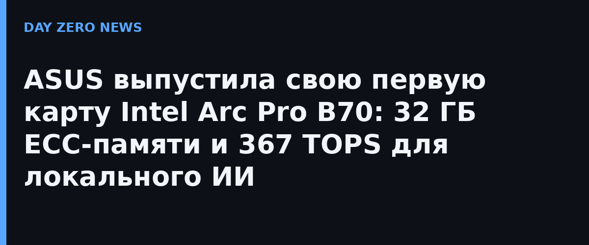

ASUS выпустила UGen Intel Arc Pro B70 32GB GDDR6 — свою первую видеокарту на графическом чипе Intel за несколько поколений Arc: компания ранее держалась в стороне от дискретной линейки Intel. Карта построена на архитектуре Xe2 с графическим процессором Big Battlemage и нацелена не на игры, а на ИИ-вывод и рабочие станции.
В карте 32 ядра Xe и 256 тензорных движков XMX, производительность на целочисленных вычислениях INT8 достигает 367 TOPS. Память — 32 ГБ GDDR6 с коррекцией ошибок ECC и пропускной способностью 608 ГБ/с, интерфейс PCIe 5.0 x16, типовое потребление 310 Вт. ASUS делает ставку именно на объём памяти: 32 ГБ позволяют развернуть локально модель или контекст, которые не влезают в привычные 24 ГБ игровых карт.
Дизайн выдержан под рабочие задачи: двухслотовое турбинное охлаждение (оно лучше работает в плотных корпусах и серверных шкафах, чем радиаторы игровых карт), выходы — HDMI и три DisplayPort. В линейке Intel Arc Pro B70 уже успела стать бестселлером рабочих станций на Newegg: 32 ГБ за цену до тысячи долларов выглядят скромно на фоне дорогих профессиональных ускорителей. В ASUS позиционируют карту как ИИ-ускоритель под фреймворки вроде vLLM, а не как игровое решение.
Появление ASUS — крупного производителя плат — в линейке Arc даёт платформе Intel то, чего ей не хватало: широкий выбор карт и нормальную розничную доступность. Для энтузиастов локального ИИ это ещё один способ собрать машину под вывод больших моделей без Nvidia. Цену версия ASUS пока не раскрыла; эталонная B70 у Intel стоит 949 долларов.